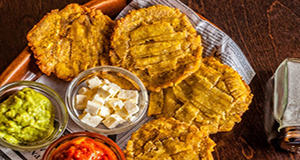

Patacones
Contexto Histórico
Patacones deriva do substantivo que designou a primeira moeda cunhada na América Latina- el patacón. ... E tem de estar verde para que o patacón fique bom. Bananas e plátanos chegaram à América pela África ocidental, via Canárias, mas sua origem é asiática. É hoje a fruta mais consumida no mundo, incluindo o Brasil.

Ingredientes:
2 bananas verdes
250 mililitros de óleo para fritar
½ colher de chá de sal
MODO DE PREPARO:
Pegue as bananas verdes e corte em rodelas grossas, com cerca de 2-3 dedos de espessura. Descasque. (Dica: Recomendo usar a banana da terra verde e descascar a banana somente após cortar, para que o corte seja mais fácil.)
Esquente o óleo numa panela ou frigideira no fogo médio. Quando estiver bem quente, coloque as bananas para fritar durante 10 minutos ou até ficarem bem douradinhas de todos os lados. (Dica: Vire as rodelas de banana com a ajuda de um garfo ou colher, para que fiquem bem fritas de todos os lados.)
Retire a banana da panela ou da frigideira e coloque num prato com papel absorvente, para escorrer o excesso de óleo. Depois esmague as rodelas de banana separadamente até ficarem o mais finas possível. Na Colômbia, tradicionalmente usa-se um utensílio chamado 'pataconera' para esmagar as bananas. Se você não tem uma pataconera, simplesmente esmague as rodelas de banana com um prato ou com uma tábua de cozinha.
Frite novamente as bananas no óleo quente por 10 minutos ou até ficarem bem douradas - fritar novamente as bananas confere-lhes mais crocância! (Dica: Em algumas regiões da Colômbia os patacones esmagados são temperados com suco de limão e alho antes de fritar novamente. Se você quiser pode temperar desse jeito) também ou usar somente sal, como indicado no passo seguinte.
Retire novamente as bananas para um prato com papel absorvente, para eliminar o excesso de óleo. Nessa hora polvilhe sal a gosto.
Após o passo anterior estão prontos seus patacones colombianos! Sirva como petisco ou acompanhamento da sua refeição - recomendo servir com tilápia frita na frigideira.